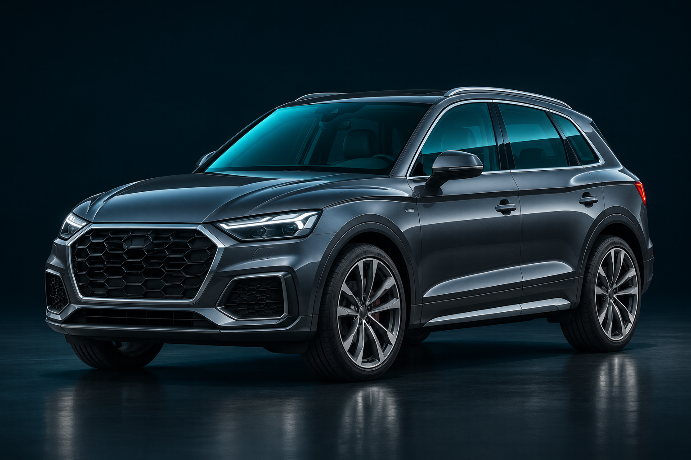

La protección no termina
donde termina el cristal.
Transparencia, zonas opacas y componentes estructurales.
Una visión de ingeniería para entender el conjunto.

Visual conceptual. Los puntos identifican temas, no ubicaciones de instalación. No representa un vehículo certificado ni una configuración de Audi Q5.
Un vehículo.
Un sistema.
Selecciona un material para descubrir su función. La diferencia está en comprender cómo se relacionan las partes, no en sumar nombres técnicos.
Más claridad para preguntar por materiales, integración y respaldo en una misma conversación con su blindadora.
Del material
a la decisión.
AGP presenta System 360 como una arquitectura que reúne aramida, cristal balístico y compuestos estructurales. Esta experiencia traduce esa idea a una explicación visual y comprensible.
Para un proyecto sobre un Audi Q5 —uno de los vehículos mencionados en el brief de México— el siguiente paso es confirmar año, versión, solución e integración con el equipo técnico y la blindadora.
La Q5 se menciona como caso de conversación, sin afirmar aquí una aplicación específica de System 360. La condición de patente y su alcance requieren documentación. Referencia: presentación oficial de AGP ↗.